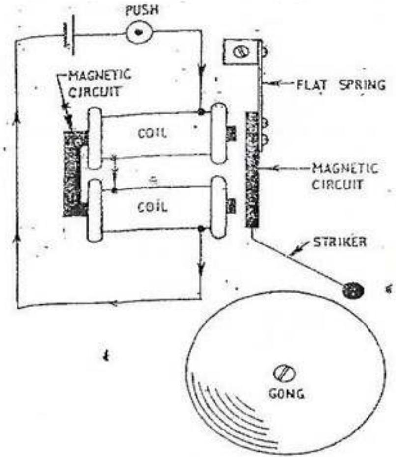

TOPIC 10; BELL, CALL AND ALARM SYSTEMS
BELL, CALL AND ALARM SYSTEMS
> Electrical indicators generally use the magnetic effect of an electric current.
> If a current is passed through a coil an electromagnetic will be produced.
> This electromagnet can be strengthened by using a soft iron- core.
> This electromagnetic is also used in the in the operation of electric bell.
TYPES OF BELLS
Single stroke bell
The bell is made up of two coils, usually wound up with varnish-insulated or cotton insulated copper wire wound on an insulated bobbin. The bobbins are fitted on to a U-Shaped soft iron core and the magnetic circuit is completed by a soft-iron strip riveted to spring loaded armature. The armature carries the striker which hits the gong at the end of its movement.
Figure 10. 1 Single-Stroke bell circuit
Operation
- Current passes through the coil when the push-button or switch is operated.
- The soft iron strip on the armature is drawn to the electromagnet against the pressure of a flat spring.
- The armature carries a striker which hits the gong.
- When the circuit is broken the coil becomes demagnetized and the spring pulls the armature back into its original position.
- The striker will only operate when the push is operated.
Chimer: the double note chimer is a variation of the single-stroke bell. Tubular chimes replace the gong and the second chime is struck by the re-bound of the striker.
Trembler Bell
The construction is similar to that of single stroke bell, with the exception of a set of variable contacts at armature which are used to break the circuit when the armature is drawn towards the electromagnet. The contact points are made of German silver to minimize the effect of the
continual arcing during the operation. See the figure above.
Operation
- When the push-button switch is operated, the coils form an electromagnet and attract the iron- soft strip.
- The movement of armature to the coil opens the contacts.
- The coil is then demagnetized and the spring pulls the armature back to its original position.
- The cycle is then repeated, giving a continual make and break action.
The speed of the stroke can be varied by varying the contact screw. The buzzer is similar in construction to that of trembler bell, the only difference being the striker and the gong.
Figure 10. 2 Trembler bell circuit
Figure 10.3 comparison of a single-stroke bell (left) & trembler bell (right)
Continuous ringing bell
This bell differs from trembler bell in that a small lever is placed below the contact screw. When the current first flows through the coils the armature is attracted and so releases the catch allowing the contact arm to move under the influence of the auxiliary spring (lever). This (short-circuits) loses the contract thus completing the bell circuit independently of the bell-push and so the bell continues to ring even though the bell push may be released. The bell will continue to ring until the reset cord is pulled
Figure 10.4 continuous ringing bell
Operation
- When the bell-push is operated the coil become an electromagnet and the armature is drawn towards them
- The lever drops on the first stroke and shorts the push.
- The bell now operates as a trembler bell.
- To stop the bell, pull the cord thus resetting the lever.
Polarized bell
This bell operated by an alternating current such as may be obtained from the magnetos used in certain types of telephone circuit. When the current in the coils has one polarity, pole A of the magnet is strengthened and pole B weakened this causes the soft iron armature to pivot so that the striker rings bell 1 . When the current reverses, pole A is weakened and pole B , strengthened, so the armature moves back causing bell 2 to be struck. Thus, the bell produces two chimes for each cycle of alternating current.
Bell accessories
1. Bell Pushes and contacts: the push button consists of two contacts, one fixed and one movable. The movable contact is either spring controlled or is itself in the form of a spring and is operated by press- knob or button. Bell contacts are used for a purpose as ringing a bell upon the opening of a door.
2. Bell transformers: the electric bell will operate not only from direct current but also from alternating current. Bell circuits may be supplied using a bell transformer instead of a battery. Class A bell transformers provide a choice of three secondary voltages, 4,8 or 12 volts. Class B bell transformers provide a single secondary voltage of 6 volts. The voltage depends upon the type of bell employed and the length of wiring run in the bell circuit.
3. Bell Relays:
> when a bell circuit is long, it may be possible that the voltage drop is great along the wires that the bell may not operate efficiently. In this case, additional cells may be added however, this is not the most efficient solution to the problem. In such conditions, a bell relay is suitable.
> A relay is a pair of electrical contacts operated by an electromagnet. A very small current is sufficient to energize the electromagnet and attracts the spring-controlled armature. The movement of the armature causes the two contacts to close and operate the bell. The relay maybe energized separately from its own supply or it may use the bell supply.
> In normally open (NO) relay type, the contacts remain open until the coil is energized while for normally closed (NC) type, the contacts remain closed as along as the coil is de-energized. Relays are used in industry to control heavy currents from a distance to reduce power loss in the cables. Examples include; control of circuit in power stations, car starter, alarm circuits e.t.c.
4. Bell circuits
> The simples possible bell circuit consists of the bell, battery and bell push connected in series.
Figure 10. 5 A simple bell circuit
IEE Regulations
i. The transformer must be double-wound.
ii. The core of the transformer (metal case if used) and one point of the winding must be earthed.
iii. The transformer should be connected to a separate sub-circuit and in this event does not require a separate control switch.
iv. The cables used to supply the transformer must be of a grade suitable for the supply the voltage in use.
v. The secondary wiring need only be insulated for extra low voltage provided that it is completely segregated from power and lighting cables. If it is necessary to run the bell circuit wiring in the same conduit or duct as power or lighting.
BELL INDICATORS
> A bell circuit is often arranged so that the bell may be operated from any one of a number of bell-pushes. An indicator board may be used to show which bell-push has been operated.
> In this circuit, when any particular push is pressed current flows through the indicator element concerned to the bell.
Types of Indicators
i) Pendulum type indicator: the element comprises a single-pole electromagnet with armature. The armature is pivoted to swing freely and colored flag is attached to the lower end. When the current flows through the coil, the armature is attracted. When current ceases the armature is released and the flag will then swing backwards and forwards for some time.
ii) Mechanical replacement indicator: when the current flows through the coil the armature is attracted. This releases the catch and the flag drops. When the current ceases, the armature returns to its normal position owing to the action of the spring, but the flag remains down until it is raised by operating the replacement button.
iii) Electrical replacement type: the element consists of two magnet coils, one of which is in series with the bell circuit. The second coil is connected in the replacement circuit. The armature is pivoted at its center about which it will rock. When current passes through the alarm circuit, one end of the armature is attracted, causing the flag to overbalance and fall to one side. To restore the flag, current is passed through the replacement coil which restores the flag to its original position.
Sounders
> These are devices in which electrical signals are converted in to sound e.g. a bell, hooters, sirens etc.
> The types and locations of the sounders should be such the alarms are clearly audible to people using the building.
> They must not have a similar sound to any other device on the premises.
Buzzers
> An electric buzzer_uses a similar mechanism to an interrupter bell, but without the resonant bell. They are quieter than bells, but adequate for a warning tone over a small distance, such as across a desktop.
> A buzzer or beeper is an audio signalling device, which may be mechanical, electromechanical, or piezoelectric. Typical uses of buzzers and beepers include alarm devices, timers and confirmation of user input such as a mouse click or keystroke.
> With the development of low-cost electronics from the 1970s onwards, most buzzers have now been replaced by electronic 'sounders'. These replace the electromechanical striker of a bell with an electronic oscillator and a loudspeaker, often a piezoelectric transducer.
The Telephone
Principle of operation
> If the resistance of the variable resistor is varied, the current flowing in the circuit (ohm's
law).
These variations in current will cause the variations in in the strength of the electromagnet. Variations in the strength of magnet field will vary the pull on the soft iron diaphragm (or disc). The disc can be made to vibrate by varying the resistance in the circuit.
Figure 10. 6 Telephone, principle of operation
Microphone and receivers
Construction and operation
i) The transmitter/ microphone converts sound waves into electrical impulses.
> The transmitter/Microphone consists of a sealed chamber containing carbon granules (powdered carbon). The cone-shaped diaphragm presses on the granules which are placed between two electrodes. The diaphragm vibrates whenever sound waves impinge upon it, the vibrations alternately compresses and releases carbon granules which form the connection between the diaphragm and the rear contact. This has the effect of varying the resistance of the microphone in sympathy with the sound waves.
> A transmitter or microphone takes the place of the variable resistor. Variations in the resistance are caused by the pressure of sound waves from the voice acting on the carbon granules thus varying current in the circuit.
Figure 10. 7 The transmitter diagram
ii) The receiver converts electrical impulses into sound waves.
> The receiver (a common form) has mu-metal diaphragm which is held very close to the poles of a permanent magnet. The poles are fitted with coils so that whenever the current in the coils varies the resultant magnetic field strength also varies and so does
the pull on the diaphragm.
> A current of one polarity will increase the pull on the diaphragm while a current of opposite polarity reduces the pull; hence if an alternating current is passed through the coil, the diaphragm moves to and fro in step with current.

Figure 10. 8 The receiver diagram
Figure 10.9 Comparison between a transmitter & a receiver
The electromagnet of the receiver changes these variations in current back into sound waves by attracting and repelling the soft-iron diaphragm. The soft iron is used because it does not retain magnetism.
One-way telephone system
The figure below shows a circuit which can only transmit sound in one direction only. The battery causes a current to flow through the carbon type transmitter and low resistance primary of the induction coil. When sound waves act on the microphone, the variations in resistance result in variations of current flowing in the microphone. These variations in form of speech current induces a voltage in in the secondary winding (has more turns than primary one thus amplifying the current to a large value enough to be transmitted over a long transmission line) of the induction coil.
The induced secondary voltage causes a speech current to flow in the receiver circuit and so the receiver will reproduce the original sound wave.
Figure 10. 10 simple Telephone Circuit
Two-way telephone system
The figure below shows how a more advanced circuit required to offer a two-way speech communication-and method of ringing can be achieved.
In this circuit, the calling switch C , is held against the top contact by a spring and the hook switch H at the down the weight of the receiver. At each stage, the line at station is connected to a bell. If the call switch is pressed at station A, current flows from B2 to the bell at station B and similarly when pressed at station B. Thus, a caller at one station can attracts attention of the person on the other end.
When the receivers at each end are lifted up, the hook switches rise and so make a connection to the sound receiving and transmitting apparatus. Speech currents from either of the transmitters can now cause voltages to be induced in their respective induction coils which will operate the receivers at each end.
A 'Pressel' switch P, is included in each microphone circuit to save current when the apparatus is not in use.
Figure 10. 11 Two-way Telephone Circuit with Calling Facilities
Burglar and Fire alarm systems
> Burglar is a type of circuit in whereby the alarm bell is rung when a door-type contact is closed by opening of a window or door. The system is more of like a fire alarm system to bring to notice of any intruder.
> Fire alarms: All premises which come under the factories act must have installation to give warning of fire.
A work system may include a number of hard operated alarm switches, commonly of break glass type, automatic fire detectors at suitable points, alarm bells, and a fire indicator board. The electrical supply may be mains supply voltage, extra-low a.c voltage or trickle-charge accumulators.
Types of alarm circuits
Open circuit
The figure below shows a continuous ringing circuit, which can be as well used as alarm circuit by use of several bell pushes wired in parallel. This is known as 'open circuit' The closing of any detector point sounds the alarm bells to ring continuously.
Figure 10. 12 A circuit to provide Continuous Ringing Action
Advantages
- The circuit is simple.
- No current is consumed on stand-by.
- A broken connection or conductor will not result in false alarm.
Disadvantages
- No indication is given if there is a break in the circuit which makes part or all of the system in operative.
- A short circuit between conductors may produce false alarm.
- The detector points are not monitored for breaks in the cable.
Closed circuit
This circuit employs a relay which is normally energized by the current flowing around a closed circuit. The opening of any detector de-energizes the relay and the closing of its contacts sounds the alarm bells. This circuit employs a relay with one 'normally closed' contact A and one 'normally open' contact B. In normal use, current flows through the alarm contacts, contact B of the relay and relay coil thus remaining energized condition so that contact A is kept open while b is closed. When any of the alarm contacts are operated, current in the relay coil is interrupted so that releasing the relay armature. This closes contact A and
rings the bell while contact B opens breaking the relay coil current. As B is open the relay cannot be energized again even if the alarm contact closes so that the bell continues to ring r until the alarm contacts is returned to normal and reset button pressed.
Figure 10. 13 Closed alarm circuit system
Advantages
- The circuit is simple
- The detector points are monitored.
Disadvantages
- Current is consumed continuously on stand-by.
- No indication is given if there is a break in the circuit which makes part or all of the system in operative.
- A short circuit between conductors may produce false alarm.
Detectors
1. Manual fire detection is the oldest method of detection. In the simplest form, a person yelling can provide fire warning. In buildings, however, a person's voice may not always transmit throughout the structure. For this reason, manual alarm stations are installed. The
general design philosophy is to place stations within reach along paths of escape. It is for this reason that they can usually be found near exit doors in corridors and large rooms.
The advantage of manual alarm stations is that, upon discovering the fire, they provide occupants with a readily identifiable means to activate the building fire alarm system. They are simple devices, and can be highly reliable when the building is occupied. The key disadvantage of manual stations is that they will not work when the building is unoccupied. They may also be used for malicious alarm activations. Nonetheless, they are an important component in any fire alarm system.
> Automatic detectors operate at any time, day or night. A detector comprises a bimetallic strip which bends when heated to a predetermined temperature. A latch is released which allows a mercury switch to tilt and thus close the alarm circuit. The detectors are normally fixed to celling away from accidental or other damage at about 6 m intervals. They must be carefully sited away from direct sunlight, hot pipes or heating appliances.
> Automatic detectors are meant to imitate one or more of the human senses of touch, smell or sight. Thermal detectors are similar to our ability to identify high temperatures, smoke detectors replicate the sense of smell, and flame detectors are electronic eyes. The properly selected and installed automatic detector can be a highly reliable fire sensor.
2. Thermal detectors are the oldest type of automatic detection device, having origin in the mid 1800's, with several styles still in production today.
> The most common units are fixed temperature devices that operate when the room reaches a predetermined temperature (usually in the $135^{\circ}-165^{\circ}\mathrm{F}$ /$57^{\circ}-74^{\circ}\mathrm{C}$). The second most common type of thermal sensor is the rate-of-rise detector, which identifies an abnormally fast temperature climb over a short time period. Both of these units are "spot type" detectors, which means that they are periodically spaced along a ceiling or high on a wall.
> The third detector type is the fixed temperature line type detector, which consists of two cables and an insulated sheathing that is designed to breakdown when exposed to heat.
The advantage of line type over spot detection is that thermal sensing density can be increased at lower cost.
> Thermal detectors are highly reliable and have good resistance to operation from nonhostile sources. They are also very easy and inexpensive to maintain. On the down side, they do not function until room temperatures have reached a substantial temperature, at which point the fire is well underway and damage is growing exponentially.
Subsequently, thermal detectors are usually not permitted in life safety applications. They are also not recommended in locations where there is a desire to identify a fire before substantial flames occur, such as spaces where high value thermal sensitive contents are housed.
3. Smoke detectors are a much newer technology, having gained wide usage during the 1970's and 1980's in residential and life safety applications. As the name implies, these devices are designed to identify a fire while in its smoldering or early flame stages, replicating the human sense of smell.
> The most common smoke detectors are spot type units, that are placed along ceilings or high on walls in a manner similar to spot thermal units. They operate on either an ionization or photoelectric principle, with each type having advantages in different applications. For large open spaces such as galleries and atria, a frequently used smoke detector is a projected beam unit.
> This detector consists of two components, a light transmitter and a receiver, that are mounted at some distance (up to $300\mathrm{ft}$ /$100\mathrm{~m}$) apart. As smoke migrates between the two components, the transmitted light beam becomes obstructed and the receiver is no longer able to see the full beam intensity. This is interpreted as a smoke condition, and the alarm activation signal is transmitted to the fire alarm panel.
> A third type of smoke detector, which has become widely used in extremely sensitive applications, is the air aspirating system. This device consists of two main components: a control unit that houses the detection chamber, an aspiration fan and operation circuitry; and a network of sampling tubes or pipes. Along the pipes are a series of ports that are designed to permit air to enter the tubes and be transported to the detector.
> Under normal conditions, the detector constantly draws an air sample into the detection chamber, via the pipe network. The sample is analyzed for the existence of smoke, and then returned to atmosphere.
> If smoke becomes present in the sample, it is detected and an alarm signal is transmitted to the main fire alarm control panel. Air aspirating detectors are extremely sensitive and are typically the fastest responding automatic detection method. Many high technology organizations, such as telephone companies, have standardized on aspiration systems. In cultural properties they are used for areas such as collections storage vaults and highly valuable rooms. These are also frequently used in aesthetically sensitive applications since components are often easier to conceal, when compared to other detection methods.
> The key advantage of smoke detectors is their ability to identify a fire while it is still in its incipient. As such, they provide added opportunity for emergency personnel to respond and control the developing fire before severe damage occurs.
> They are usually the preferred detection method in life safety and high content value applications. The disadvantage of smoke detectors is that they are usually more expensive to install, when compared to thermal sensors, and are more resistant to inadvertent alarms. However, when properly selected and designed, they can be highly reliable with a very low probability of false alarm.
4. Flame detectors represent the third major type of automatic detection method, and imitate the human sense of sight. They are line of sight devices that operate on either an infrared, ultraviolet or combination principle. As radiant energy in the approximate 4,000 to 7,700 angstroms range occurs, as indicative of a flaming condition, their sensing equipment recognizes the fire signature and sends a signal to the fire alarm panel.
The advantage of flame detection is that it is extremely reliable in a hostile environment. They are usually used in high value energy and transportation applications where other detectors would be subject to spurious activation. Common uses include locomotive and aircraft maintenance facilities, refineries and fuel loading platforms, and mines.
> A disadvantage is that they can be very expensive and labor intensive to maintain. Flame detectors must be looking directly at the fire source, unlike thermal and smoke
detectors which can identify migrating fire signatures. Their use in cultural properties is extremely limited.
Fire alarm devices detects the following;
- Air temperature change
- Combustion products e.g. smoke
- Radiation of electromagnetic waves either infrared or UV rays
Intruder detection devices uses;
- Pressure pads for vulnerable areas e.g. underfloor and covers,
- Micro-switches fitted entrance and windows
- Proximity capacitor devices
- Passive infra-red electromagnetic radiations which will activate when interrupted by movement or slight body heat.
Proximity switches/sensors
A proximity sensor is a sensor able to detect the presence of nearby objects without any physical contact. A proximity sensor often emits an electromagnetic field or a beam of electromagnetic radiation (infrared, for instance), and looks for changes in the field or return signal.
> The object being sensed is often referred to as the proximity sensor's target. Different proximity sensor targets demands different sensors. For example, a capacitive proximity sensor or photoelectric sensor might be suitable for a plastic target; an inductive proximity sensor always requires a metal target
Wiring requirements
Suitable wiring systems include;
i) MIMS (PVC-sheathed for damp and corrosive conditions)
ii) PVC-insulated cables in metal conduit, duct or trunking or rigid PVC conduit.
iii) PVC armoured cables
iv) Insulated and sheathed cables surface laid where continuous monitoring is used.
Manual Call points
Manual call points for fire only are usually of the 'BREAK THE GLASS' type and are coloured red.
Call points are to be located so that no one has to travel for more than 30 m from any position within the premises in order to raise the alarm. They should be located on exit routes particularly on floor landings of staircases and on exit streets.
They should be fixed at a height of 1.4 m above the floor at easily accessible, well illuminated, conspicuous positions free from obstruction.
Safety requirements.
- As required for extra low voltage circuit to be kept apart from other circuits supplied directly from mains, so it is with the alarm circuits.
- Fire alarm installations should be kept completely separated from the wiring of any other circuit and as far as possible should not follow a common route with other cables.
- For loud ringing alarm bells maybe operated from the mains however, the conduit entry for the wiring should be provided together with an earthing terminal.
IEE regulations
i. All new installations should be inspected and tested to ensure that work has done satisfactorily and to the required standard.
ii. Earth connections should be tested in accordance with IEE regulations and the insulation resistance between conductors and earth tested with a 500 V tester, minimum resistance 0.5 m Ohms.
iii. Fire alarms and emergency should not be drawn into the same enclosures with other circuits. They must be separated by metallic barriers when placed in common trunking or ducting or run in separate conduits. This is to ensure that spread of fire does not put the circuit out of action.
iv. Cables operating at extra low voltages such as those for bells must be run separately from mains (low) voltage circuits unless they are insulated to the same value.
KNEC QUESTIONS
4. a) (Oct/nov- 2014) Explain why double wound transformers are used in bell circuits
This is the type of transformer used for domestic bell circuits. The transformer consists of two separate windings. These windings are electrically isolated from each other and therefore provide a safe output voltage which is totally isolated from the mains supply.
c) Draw a wiring diagram showing how two d.c. electric bells are operated independently by two bell-pushes.
5. Oct-Nov 2018 - List four types of electric bells
a) Outline three IEE requirements regarding bell transformers
b) Draw the following electrical bell indicators types
i. Pendulum type
ii. Mechanical replacement
6. jjjj